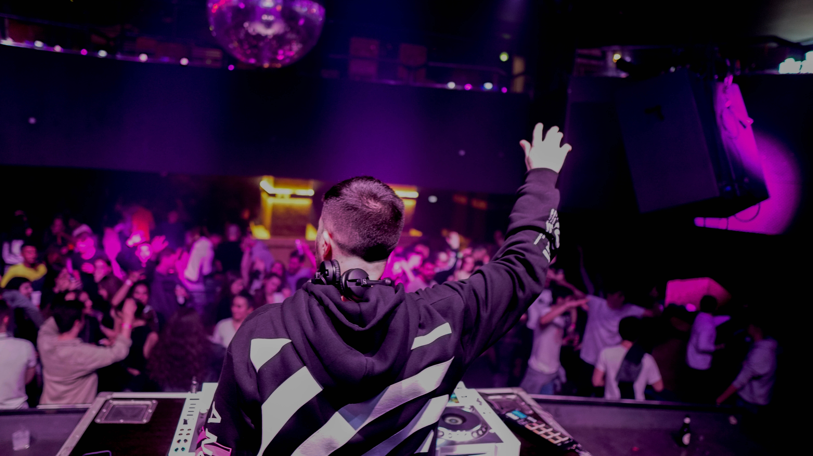

-

-

- 
Biografía de DiazzDj
Dj y Español nacido en Asturias el 22 de Octubre de 1993
Un fijo en todas las fiestas universitarias de Asturias.
Sus sesiones se caracterizan por mezclar todos los géneros de música urbana tratando de sorprender, no pinchando lo que su público quiere, sino lo que no sabia que quería. Por este motivo ven en Él algo diferente al resto de DJs de este género musical.
Ha compartido cartel con artistas internacionales, “CHIMBALA, BULOVA, ATOMIC, DJ ADONII, DJ BALLESTEROS, DJ JUANJO GARCIA, ALVAMA ICE, LUIS MIGUEL DEL AMARGUE, TEODORO REYES, HENRY MÉNDEZ, DR. BELLIDO” son algunos de ellos.
Como productor y remixer, le encanta hacer sus propias versiones para sorprender en sus sets, pero también le gusta compartir sus ideas y trabajos con los demás compañeros. Desde las remezclas más sencillas regalándolas en sus perfiles hasta los remixes más trabajados y pisteros.
Ciudades donde ha trabajado:
(ASTURIAS):Gijón, Oviedo, Avilés, Pola De Laviana, Mieres, Langreo, Llanes, Arriondas, Grado, Cudillero
(NACIONALES): León, Bembibre, Ponferrada, Santander, Torrelavega, Pontevedra, Lugo, Vitoria Gasteiz, Valencia, Burgos, Vigo, Denia.
Salas en las que ha trabajado:
La Buena Vida (Gijón), The Garage (Vitoria - Gasteiz)
Bossanova (Gijón), Cabaré (Gijón), Oasis (Gijón), El Jardín (Gijón), La Habana (Gijón), Pura Vida (Gijón), Pijo Canalla (Oviedo), Sala Estilo (Oviedo), Sala Cuatro (Avilés), Pub Xareu (Llanes), New Spook (Grado), La Posada (Ponferrada), Aipol (Arriondas), Mauso (Mieres), Bulevar (Laviana), En vivo (Torrelavega), Samoa (Santander), Kroker (Torrelavega), Metro (Salceda), La Fabrica (Redondela), La Ciudadela (Burgos), Glow (Vitoria - Gasteiz),
Sounders (Denia), Nakala (Vitoria - Gasteiz)
Singular ( A guarda - Vigo).
Festivales:
Pool Party LBVF (GIJÓN)
La Xarana (Pola De Laviana)
Descenso Internacional Del Sella (Arriondas).
E infinidad de fiestas temáticas a lo largo del principado Asturiano.